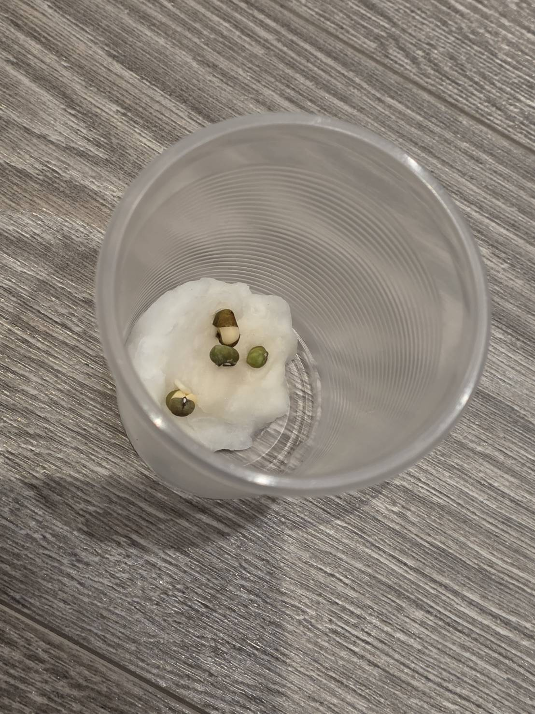
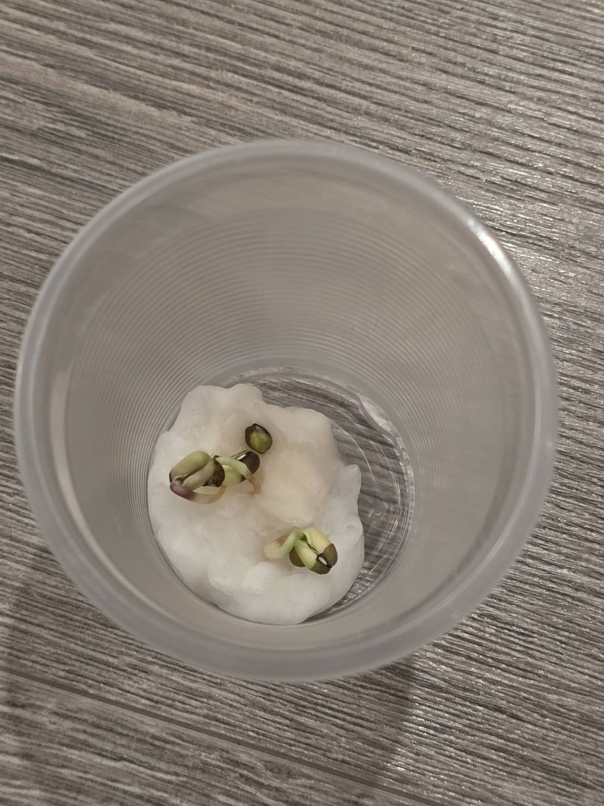
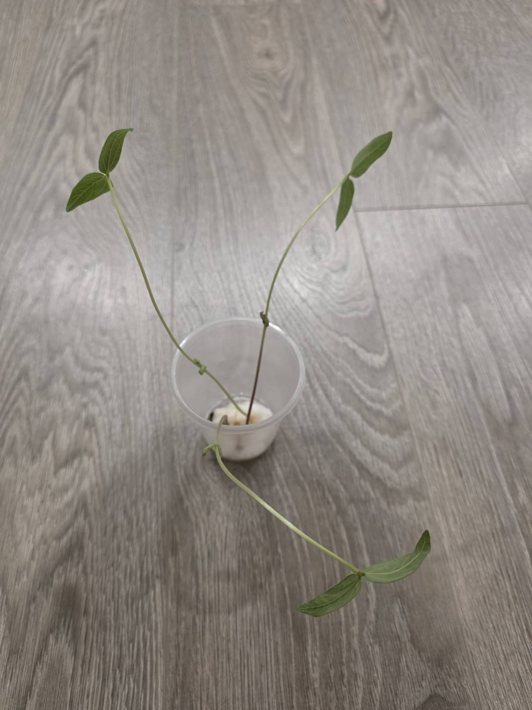
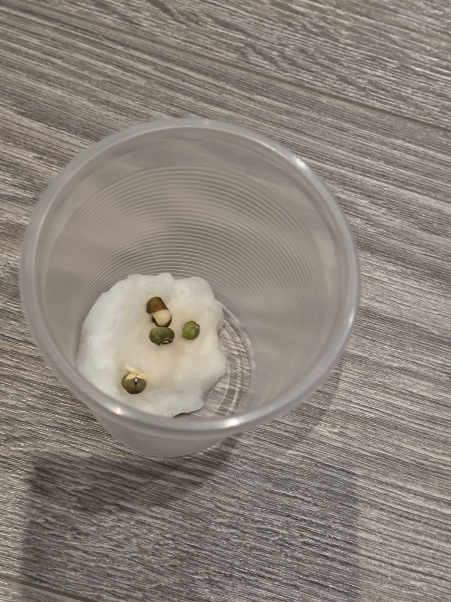

第 1 天
11 月 3 日（星期二）把棉花沾濕放進透明杯子裡，再放上 4 顆綠豆。綠豆小小的、綠綠的、硬硬的。
觀察者：Harvey ｜ 2026 年 11 月




把棉花沾濕放進透明杯子裡，再放上 4 顆綠豆。綠豆小小的、綠綠的、硬硬的。

有 2 顆綠豆的皮裂開了，從裂縫冒出白白的小芽！另外 2 顆還沒有變化，其中一顆看起來比較小、比較亮綠色。
變化好大！有 3 顆長出淡綠色的莖，彎彎的像一個小鉤子，綠豆的殼被撐開了。有一根莖的下面有一點紫紫的顏色。還有 1 顆只有一點點小芽。
這兩天沒有拍照。
哇！綠豆變成小苗了！莖長得又細又長，比杯子高很多。上面長出一對一對尖尖的綠色葉子。莖靠近棉花的地方是紫紅色的，棉花也變得有點黃黃的。
3 棵綠豆苗長得更長了，往不同的方向彎。有一棵太長了撐不住，垂到杯子外面。葉子都張開了，綠綠的很漂亮。